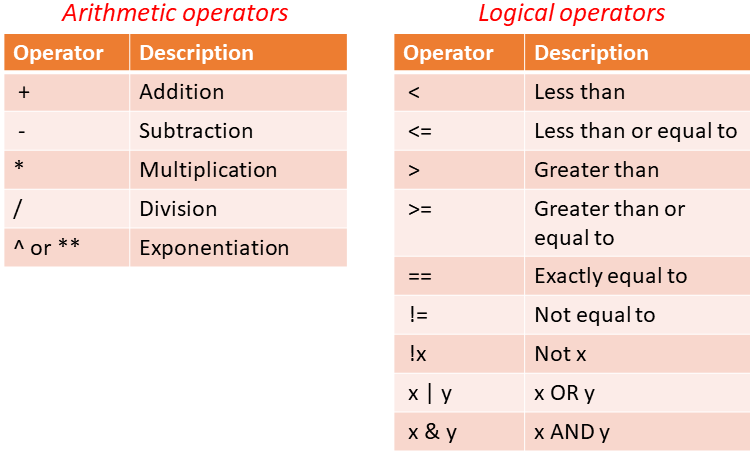
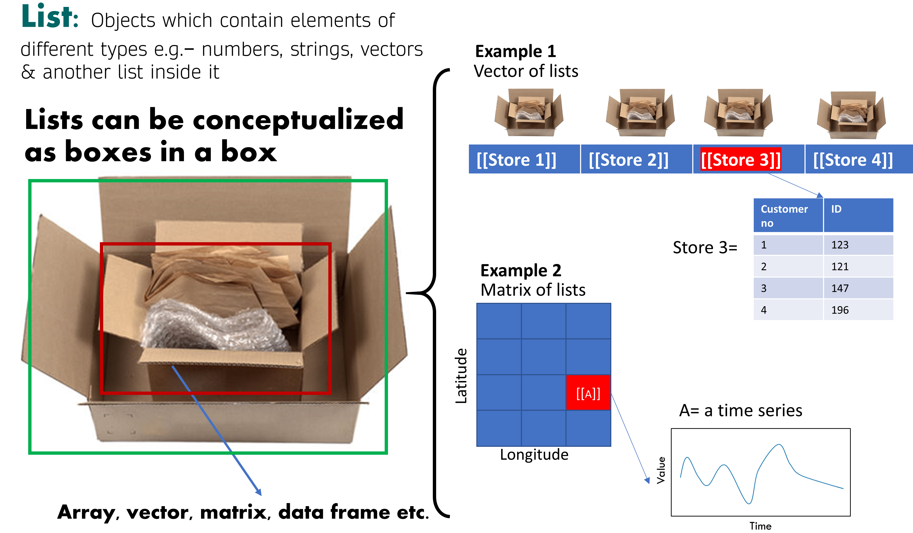

In this section, we will learn about some basic R operators that are used to perform operations on variables. Some most commonly used operators are shown in the table below.

R follows the conventional order (sequence) to solve mathematical operations, abbreviated as BODMAS: Brackets, Orders (exponents), Division, Multiplication, Addition, and Subtraction
2+4+7# Sum
[1] 13
4-5# Subtraction
[1] -1
2*3# Multiplication
[1] 6
1/2# Division
[1] 0.5
# Order of operation1/2*3+4-5
[1] 0.5
1/2*(3+4-5)
[1] 1
1/(2*(3+4-5))
[1] 0.25
1/(2*3+4-5)
[1] 0.2
# Notice how output changes with the placement of operators# Other operators:2^3
[1] 8
log(10)
[1] 2.302585
sqrt(4)
[1] 2
pi
[1] 3.141593
# Clear the Environmentrm(list=ls()) # rm is for remove,ls is short for list. The empty parenthesis i.e. () signifies all content.
2.2 Basic data operations
In this section, we will create some vector data and apply built-in operations to examine the properties of a dataset.
# The "is equal to" or "assignment operator in R is "<-" or "=" # Generate sample data. Remember "c" comes from for "concatenate". data<-c(1,4,2,3,9) # Try data = c(1,4,2,3,9). Is there any difference in data in both cases?# rbind combines data by rows, and hence "r"bind# cbind combines data by columns, and hence "c"bind# Checking the properties of a dataset. Note: the na.rm argument ignores NA values in the dataset.data=rbind(1,4,2,3,9) dim(data) # [5,1]: 5 rows, 1 column
[1] 5 1
data[2,1] # Show the value in row 2, column 1
[1] 4
data[c(2:5),1] # Show a range of values in column 1
[1] 4 2 3 9
mean(data, na.rm=T) # Mean
[1] 3.8
max(data) # Maximum
[1] 9
min(data) # Minimum
[1] 1
sd(data) # Standard deviation
[1] 3.114482
var(data) # Variance
[,1]
[1,] 9.7
summary(data)
V1
Min. :1.0
1st Qu.:2.0
Median :3.0
Mean :3.8
3rd Qu.:4.0
Max. :9.0
str(data) # Prints structure of data
num [1:5, 1] 1 4 2 3 9
head(data) # Returns the 1st 6 items in the object
[,1]
[1,] 1
[2,] 4
[3,] 2
[4,] 3
[5,] 9
head(data, 2) # Print first 2
[,1]
[1,] 1
[2,] 4
tail(data, 2) # Print last 2
[,1]
[4,] 3
[5,] 9
# Do the same, but with "c()" instead of "rbind"data=c(1,4,2,3,9) dim(data) # Note: dim is NULL
NULL
length(data) # Length of a dataset is the number of variables (columns)
[1] 5
data[2] # This should give you 4
[1] 4
# Other operators work in the same waymean(data) # Mean
[1] 3.8
max(data) # Maximum
[1] 9
min(data) # Minimum
[1] 1
sd(data) # Standard deviation
[1] 3.114482
var(data) # Variance
[1] 9.7
# Text datadata=c("LSU","SPESS","AgCenter","Tigers") data # View
[1] "LSU" "SPESS" "AgCenter" "Tigers"
data[1]
[1] "LSU"
# Mixed datadata=c(1,"LSU",10,"AgCenter") # All data is treated as text if one value is textdata[3] # Note how output is in quotes i.e. "10"
[1] "10"
For help with a function in R, just type ? followed by the function to display information in the help menu. Try pasting ?sd in the console.
2.3 Data types
In R, data is stored as an “array”, which can be 1-dimensional or 2-dimensional. A 1-D array is called a “vector” and a 2-D array is a “matrix”. A table in R is called a “data frame” and a “list” is a container to hold a variety of data types. In this section, we will learn how to create matrices, lists and data frames in R.

# Lets make a random matrixtest_mat =matrix( c(2, 4, 3, 1, 5, 7), # The data elements nrow=2, # Number of rows ncol=3, # Number of columns byrow =TRUE) # Fill matrix by rows test_mat =matrix( c(2, 4, 3, 1, 5, 7),nrow=2,ncol=3,byrow =TRUE) # Same result test_mat
[,1] [,2] [,3]
[1,] 2 4 3
[2,] 1 5 7
test_mat[,2] # Display all rows, and second column
[1] 4 5
test_mat[2,] # Display second row, all columns
[1] 1 5 7
# Types of datasetsout =as.matrix(test_mat)out # This is a matrix
[,1] [,2] [,3]
[1,] 2 4 3
[2,] 1 5 7
out =as.array(test_mat)out # This is also a matrix
[,1] [,2] [,3]
[1,] 2 4 3
[2,] 1 5 7
out =as.vector(test_mat)out # This is just a vector
[1] 2 1 4 5 3 7
# Data frame and listdata1=runif(50,20,30) # Create 50 random numbers between 20 and 30 data2=runif(50,0,10) # Create 50 random numbers between 0 and 10 # Listsout =list() # Create and empty listout[[1]] = data1 # Notice the brackets "[[ ]]" instead of "[ ]"out[[2]] = data2out[[1]] # Contains data1 at this location
# Data frameout=data.frame(x=data1, y=data2)# Let's see how it looks!plot(out$x, out$y)
plot(out[,1])
For a data frame, the dollar “$” sign invokes the variable selection. Imagine how one would receive merchandise in a store if you give $ to the cashier. Data frame will list out the variable names for you of you when you show it some $.